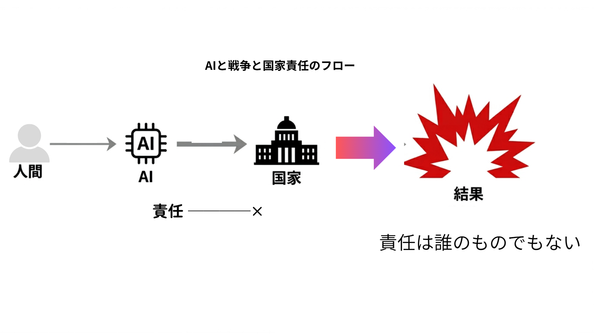

われわれは近年、二つの現象を別々の問題として論じることに慣れすぎた。一つは人工知能の急速な発達であり、いま一つは戦争の技術化・遠隔化である。しかし本来、この二つは別個の問題ではない。
ＡＩとは判断の外部化であり、戦争とは暴力の外部化である。そして両者に共通する核心は、人間が自らの行為の帰結を引き受けなくなるという一点にある。
このことを、いま世界の公的言語の中で比較的明瞭に語っているのが、教皇レオ14世である。教皇はＡＩを単なる技術ではなく、「人間の尊厳」「責任ある判断」「倫理的統治」の問題として位置づけている。2025年6月のメッセージでも、ＡＩの「本来的に倫理的な側面」と責任あるガバナンスの必要を明確に述べた。5月の枢機卿団への演説では、ＡＩを新たな産業革命になぞらえつつ、人間の尊厳、正義、労働を守る課題として語っている。
この種の発言は、日本ではしばしば「宗教者らしい理想論」として片づけられがちである。だが、そうした受け止め方は浅い。なぜなら、教皇の言葉が示しているのは単なる善意ではなく、文明の持続を可能にする最低限の条件だからである。
図解：ＡＩと戦争と国家責任のフロー
人間の判断がＡＩに委ねられ、国家の決定に変換されるとき、責任の所在は霧散する。

倫理は理想ではなく、文明の骨格である
保守の立場から見るなら、まず確認すべきことがある。倫理とは、現実に対する甘い感傷ではない。それはむしろ、歴史の中で繰り返し生じた破局と混乱ののちに、ようやく人類が掴み取った統治の抑制原理である。
保守思想は、本来、抽象理念への陶酔を嫌う。しかしそれは、原理そのものを軽んじるという意味ではない。むしろ逆である。原理なき現実主義が、最後にはただの便宜主義に堕することを、歴史から知っている。それが保守の立場である。
エドマンド・バークが見抜いていたのは、政治とは単なる制度設計ではなく、「死者・生者・未生者」を結ぶ秩序の継承だという事実であった。国家は、目先の効率だけで動かしてよい機械ではない。そこには、言葉にしにくいが、決して失ってはならない形式がある。
- ・権力には限度があること
- ・人命は手段化されてはならぬこと
- ・決断には責任の主体が伴わねばならぬこと
こうした規範は、近代の贅沢ではない。人間社会が人間社会として崩れ切らないための骨組みである。
それゆえに、教皇レオ14世の語る倫理を、単なる宗教的道徳として外に置くべきではない。それはむしろ、近代以後の政治がみずからの暴走を抑えるために、必死に保持してきた文明的自制の言語にほかならない。
教皇のＡＩ論も本質は同じである。ＡＩの利益や利便ではなく、まず「何が人間を人間たらしめるのか」を問うている。2025年1月に公表されたバチカン文書「Antiqua et nova」も、情報処理能力と人間の知恵を混同してはならないと論じ、技術評価の基準を人間の尊厳と全人的発展に置いている。ここには、単なる技術規制論を超えた人間理解がある。
ＡＩは判断を代行するが、責任までは代行しない
ＡＩの本質的な危うさは、しばしば誤認されている。多くの人は、ＡＩの危険を「精度」の問題として語る。誤作動するか。偏見を含むか。暴走するか。たしかにそれらは重要である。だが、もっと深いところにある本当の危険は、人間が判断することをやめる点にある。
判断とは、単に最適解を計算することではない。
- ・どの価値を優先するか
- ・誰の不利益を引き受けるか
- ・どの犠牲を許容し、どこに踏みとどまるか
そうした問いに、自ら名をもって答えることである。ここに人格があり、ここに政治がある。
ＡＩは、判断の材料を提示できる。処理を高速化できる。だが、責任の主体にはなれない。責任とは、アルゴリズムの出力ではなく、最終的に「私が決めた」と言える者にのみ宿るからである。
にもかかわらず、現代社会はこの一点を曖昧にしつつある。企業は「ＡＩの推奨」を盾にする。官僚機構は「データに基づく判断」を言い訳にする。政治は「専門技術の要請」を理由に主体的決断を回避する。こうして責任は、誰のものでもないものへと霧散していく。
これは保守がもっとも警戒すべき事態である。保守とは、責任を制度に埋没させない思想だからだ。制度がいかに精巧でも、最後には誰かが引き受けねばならぬ。決断の顔が消えた政治は、いずれ国民に対して無責任になる。そして無責任な統治は、たとえ柔らかい言葉をまとっていても、必ず専横へ近づくのである。
戦争の遠隔化は、暴力の道徳的距離を広げる
この問題は、戦争においてさらに深刻になる。戦争はもともと、国家が暴力を制度化したものである。だからこそ古来、そこには厳格な抑制が必要とされた。武力行使は例外でなければならず、目的は限定されねばならず、民間人は守られねばならず、指揮命令の責任は明確でなければならない。
こうした原則は、単なるきれいごとではない。暴力を完全には廃し得ぬ人間社会が、その暴力に呑み込まれないための最低限の堤防である。
ところが現代の戦争は、その堤防を静かに侵食している。遠隔操作兵器、無人機、自律化システム、ＡＩによる目標識別。技術は、戦争を効率化し、同時に道徳的に見えにくくする。敵は画面上の点となり、死は数値となり、破壊はオペレーションと呼ばれる。引き金を引く指は、もはや土と血の現場に触れない。
だが、それで暴力の本質が変わるわけではない。人を殺傷するという事実は、遠隔化されても消えない。むしろ、現場との距離が開けば開くほど、決断者は自らの行為を過小評価しやすくなる。
ここに戦争の技術化が持つ最大の危険がある。暴力が容易になるのではない。暴力に伴う良心の摩擦が消えていくのである。
保守の立場は、この点で曖昧であってはならない。保守は、国防を否定しない。抑止力を否定しない。武力の必要性から目を背けるべきでもない。国家は国民の生命と領土を守る責務を負っており、そのための力を備えることは、むしろ統治の当然の責任である。
しかし同時に、保守は知っていなければならない。力は、それ自体が正義なのではない。責任によってのみ統御されるのである。この統御を失ったとき、国家は国家であることをやめ、単なる巨大な実力装置へと変質する。
ゆえに、戦争の技術化を前にして保守が守るべきものは、平和主義の空疎な唱和ではなく、暴力の最終責任は人間が負うという原則である。人間が命じ、人間が決断し、人間が歴史の前に裁かれる。この形式を崩してはならない。
教皇の言葉が「整理されて聞こえる」理由
多くの人が、教皇レオ14世の言葉に接して、「この人の話は妙に整理されて聞こえる」と感じるのはなぜか。それは、彼の議論が巧みだからというだけではない。彼が責任と時間軸を外さないからである。
現代政治は、短期の成果に追い立てられている。世論、選挙、株価、支持率、外交上の即効性。すべてが短い時間で評価される。その結果、政治は「何が正しいか」よりも「何がいま通るか」に傾斜しやすい。倫理は遅い。原理は説明に時間がかかる。したがって、それらはしばしば脇へ押しやられる。
これに対し、教皇の言葉は、常に長い時間の中に置かれている。人間とは何か。若者はいかに育つべきか。真理と善への志向をどう守るか。何世代にもわたって、どのような社会を残すのか。
バチカンのＡＩ文書も、若者の知的・道徳的成熟を損なってはならないこと、情報への接近と知恵を混同してはならないことを強調している。この視座は、実はきわめて保守的である。なぜなら保守とは、目の前の便利さよりも、共同体が長期にわたり生き延びる条件を重んじる立場だからである。
教育とは何か。伝統とは何か。国家とは、いかなる人格形成を可能にする場であるべきか。こうした問いなしに保守を名乗るなら、それは単なる反射的現状維持にすぎない。
教皇の発言が示しているのは、政策そのものではない。政策以前の秩序感覚である。何をしてはならないのか。何を越えてはならないのか。その線が曖昧になった社会では、結局どの政策も、ただの便法に成り下がる。
日本の保守が失ってはならぬもの
では、日本の保守はこの問題をどう受け止めるべきか。重要なのは、教皇の言葉をそのまま輸入することではない。わが国にはわが国の歴史があり、宗教文化があり、国家形成の文脈がある。日本はローマではない。したがって、教会の言語をそのまま日本の政治言語に置き換えるのは適切ではない。
しかし、それでもなお学ぶべきものはある。それは、公的倫理を語る覚悟である。
日本では長らく、倫理は言語化されなくとも共同体の内部で作動してきた。家、地域、学校、職場、祭祀、慣習。明文化されぬ抑制が、人を人たらしめる枠を支えていた。だが、その基盤が弱まったいま、なお従来どおり「言わずとも分かる」に依存することはできない。
特にＡＩや戦争のように、技術と国家が結びつく巨大な問題においては、倫理を沈黙のうちに期待するだけでは足りない。
保守がいま回復すべきは、道徳説教ではない。また、空疎な精神論でもない。必要なのは、国家、技術、軍事、教育を貫いて、人間が責任主体であり続けるための原理を、明確な言葉で公に語ることである。
ＡＩは人間の補助であって代替ではない。戦争は国家の権利ではなく、最後の責務である。武力は抑止のために備えるが、行使の責任は人間が負う。教育は適応能力の育成にとどまらず、善悪を判断する人格を養うものである。こうしたことを、曖昧なままにしてはならない。
保守とは、単に左派への反発ではない。人間観、国家観、歴史観を持つことだ。そしてその中心には常に、「自由とは責任を負いうる者にのみ許される」という厳粛な認識がなければならない。
倫理は政策の代用品ではない。だが、政策の基準である
もちろん、ここで誤ってはならぬ。倫理は政策の代わりにはならない。教皇の言葉が、そのまま安全保障政策になるわけではない。国家は現実を生きる。抑止も、同盟も、軍備も、情報も必要である。理想だけで国民は守れない。
だが、だからといって倫理が不要になるわけではない。むしろ逆である。現実に手を汚さざるを得ない政治だからこそ、何を越えてはならぬかを示す基準が要る。基準なき現実主義は、やがて自らの手段に支配される。
ゆえに、保守の態度は明快でなければならない。教皇の倫理を政策の代用品とは見なさない。しかし、政策を点検し、統治の逸脱を戒める上位の尺度としては、真剣に受け止める。
この距離感こそ成熟である。宗教的権威に政治を委ねるのではない。しかし政治が、倫理の問いから逃げることも許さない。この二重の緊張を引き受けることが、保守の務めである。
結局、問われているのは文明の品位である
ＡＩと戦争。この二つは、現代世界における技術と権力の先端である。そしてその先端で、いま静かに失われつつあるのは、人間が人間として決断し、その帰結を引き受けるという古く厳しい形式である。
便利になることは、成熟ではない。強くなることも、ただちに高貴さを意味しない。文明の真価は、どれほど強力な手段を持つかではなく、その手段を前にしてなお、どこで踏みとどまれるかにある。
だからこそ、最後に問われるのは一つしかない。ＡＩがどこまで賢くなるかではない。兵器がどこまで精密になるかでもない。国家がどこまで効率的に敵を制圧できるかでもない。誰が、その決断を引き受けるのか。
この問いを失ったとき、政治は技術の下請けとなり、戦争は操作となり、人間は自ら作った装置の陰に隠れる。そのような社会は、豊かであっても、もはや高貴ではない。
保守が守るべきものは、古い制度の残骸ではない。人間が責任を負う主体であり続けるという、文明のもっとも重い約束である。その約束を守るかぎりにおいてのみ、ＡＩもまた国家も、なお人間に仕える。
それを失うなら、われわれは進歩するのではない。ただ、立派な言葉をまといながら、野蛮へと後退するだけである。
日本の保守政治が今問われているのは、責任の言語を取り戻せるかどうかだ。
※参考資料
教皇レオ14世「人工知能、倫理、およびコーポレート・ガバナンス 参加者各位へ」（2025年6月17日）
https://www.vatican.va/content/leo-xiv/en/messages/pont-messages/2025/documents/20250617-messaggio-ia.html